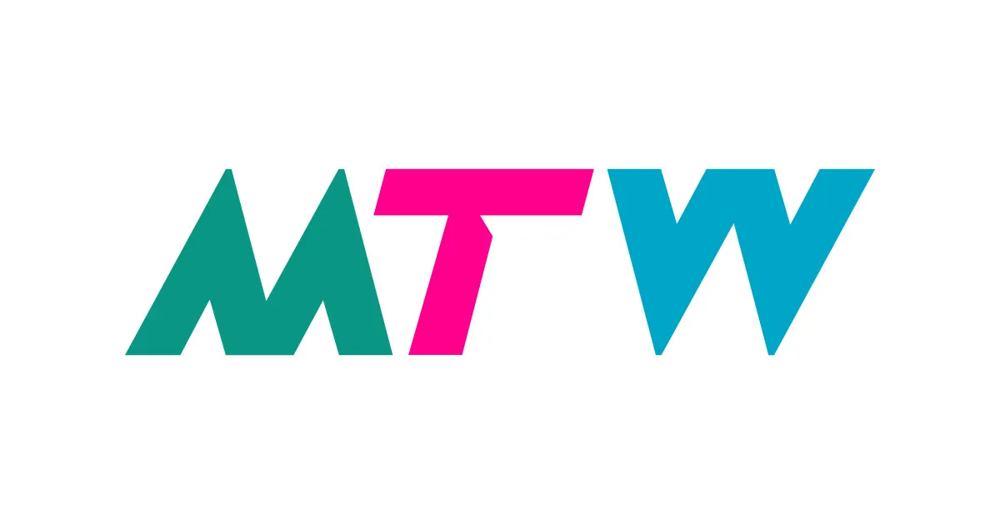

A Liverpool year inside 30 km of Moor Hall
Pin Moor Hall at L39 6RT [1], draw a 30 km circle, and the IT calendar narrows almost entirely to Liverpool. Manchester sits ~44 km / 56 km out and falls off the map [2]. Two set-pieces anchor the rest of the year: LCR Innovation Investment Fortnight, 1–12 Jun [7] and the LCR AI Summit, 23 Oct at ACC Liverpool [11].
The circle is what does the cutting
From Moor Hall in Aughton, the radius takes in Liverpool, Southport, Preston, Wigan, St Helens, Birkenhead and Ormskirk itself. It does not take in Manchester (44 km), Chester (~50 km) or central Bolton (~32 km) — three of the four biggest North-West tech venues outside Liverpool. The result: a calendar that is overwhelmingly a Liverpool City Region story [7].
Edge Hill University (Ormskirk) is the closest large venue at ~5 km — but it hosts a higher-ed teaching conference, not a pure IT track [17].
The year as twelve columns

Manchester Tech Week & DTX Manchester · 27 Apr – 1 May
The biggest North-West tech week of the year sits at Manchester Central, ~44 km straight-line / 56 km by road from Moor Hall [2]. Don't try to combine with a Moor Hall weekend — it's a separate trip, ~1 h transit each way [18].
Always-on · recurring meetups inside the radius
When the conference calendar quietens (Jul–Aug, Dec), these are the venues still firing. Almost all cluster in central Liverpool; Preston picks up the slack ~25 km north.
Venues by distance from Moor Hall
Same circle, viewed end-on. The 0–30 km strip from Moor Hall, with every IT venue plotted at its actual distance. The cliff at the right edge is where Manchester would sit — off the chart.
Exchange